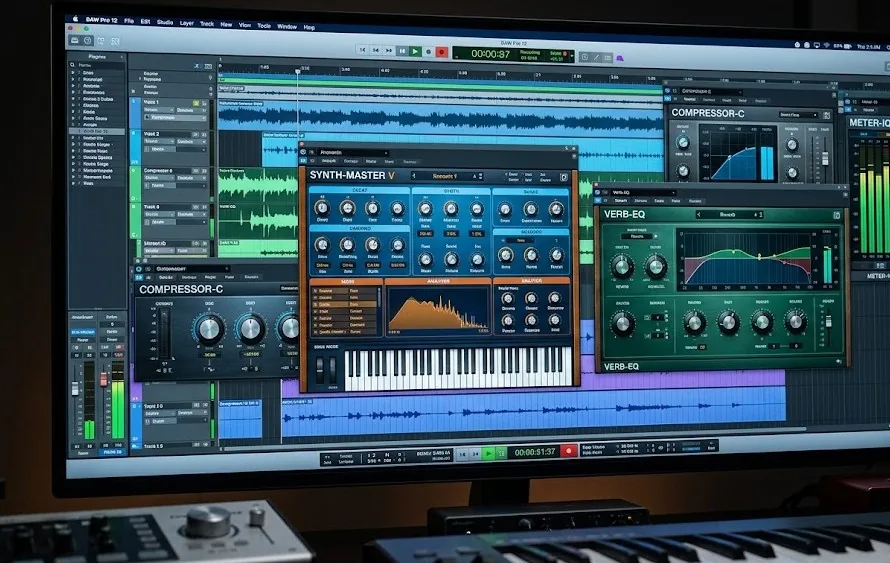
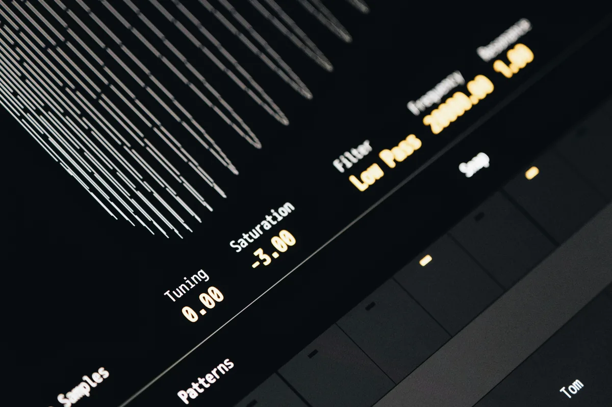
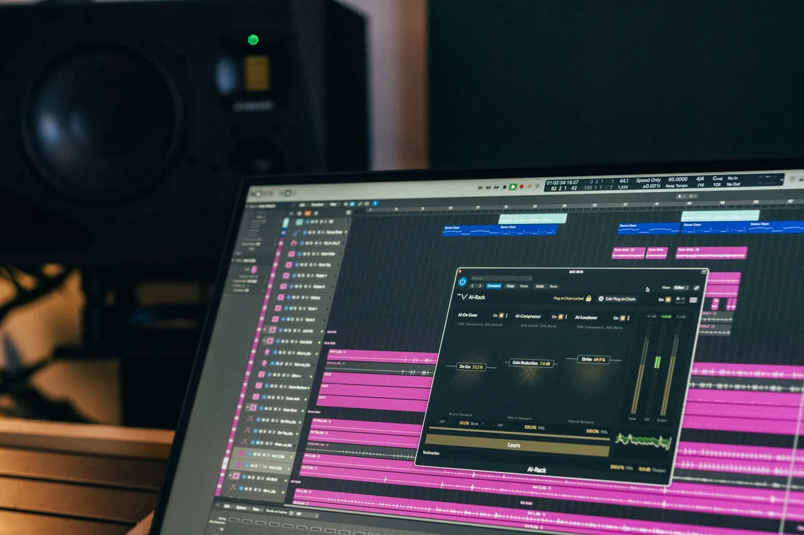

Kiedy zaczynasz produkcję muzyki, DAW wydaje się skomplikowany sam w sobie - a tu nagle okazuje się, że każdy producent ma zainstalowane dziesiątki dodatkowych wtyczek. Czym właściwie są wtyczki VST, do czego służą i które z nich naprawdę przydadzą ci się na początku? Ten artykuł to praktyczny przewodnik - bez polecania wszystkiego po trochu i bez gloryfikowania drogiego sprzętu.
Co to jest wtyczka VST
VST to skrót od Virtual Studio Technology - format wtyczek opracowany przez firmę Steinberg w 1996 roku. W praktyce wtyczka VST to dodatkowe oprogramowanie, które ładujesz wewnątrz swojego DAW-a i które rozszerza jego możliwości. Możesz myśleć o tym jak o dodawaniu nowych narzędzi do warsztatu - DAW to warsztat, a wtyczki to konkretne narzędzia.
Wtyczki dzielą się na dwa główne typy. Pierwszy to efekty (VST FX) - przetwarzają istniejący dźwięk, np. dodają pogłos, kompresują dynamikę, korygują barwę. Drugi to instrumenty wirtualne (VSTi) - generują dźwięk od zera, np. syntezatory, samplery, perkusje. Na starcie potrzebujesz głównie efektów - instrumenty są tematem na osobny artykuł.
Warto wiedzieć, że poza formatem VST istnieją też AU (Audio Units, używane na macOS w Logic Pro) i AAX (format Pro Tools). Większość producentów wydaje swoje wtyczki we wszystkich trzech formatach, więc przy zakupie sprawdź tylko, czy dana wtyczka obsługuje twój system.
Jakich wtyczek naprawdę potrzebujesz na start
Zanim zaczniesz instalować wszystko co zobaczysz na YouTube, odpowiedz sobie na pytanie: co chcesz osiągnąć? Na starcie realnie potrzebujesz czterech kategorii narzędzi - equalizera, kompresora, pogłosu i limitera. Poniżej krótkie wyjaśnienie każdej z nich.

Equalizer (EQ)
EQ pozwala kształtować barwę dźwięku - wzmacniać lub tłumić wybrane pasma częstotliwości. Jeśli bas jest za gruby, odcinasz niskie częstotliwości. Jeśli wokal brzmi nosowo, szukasz problematycznego pasma i je obniżasz. EQ to jeden z dwóch najważniejszych narzędzi w miksie - bez niego nie dasz rady zbudować czytelnej przestrzeni między instrumentami. Więcej o tym, jak działa korektor, przeczytasz w artykule o EQ.
Kompresor
Kompresor kontroluje dynamikę - wyrównuje różnice między cichymi a głośnymi fragmentami nagrania. Dzięki niemu wokal nie znika w cichych momentach i nie przebija wszystkiego w głośnych. Kompresja to temat, który wymaga osobnego artykułu - mamy go na stronie, jeśli chcesz zrozumieć parametry zanim zaczniesz używać wtyczki.
Reverb i delay
Reverb symuluje akustykę przestrzeni - małego pokoju, dużej sali koncertowej albo kościoła. Delay to efekt echa - opóźnione powtórzenia dźwięku. Oba służą do umieszczania instrumentów w przestrzeni i tworzenia głębi w miksie. Bez pogłosu brzmienie brzmi "sucho" i plastycznie - jeden dobrze ustawiony reverb potrafi zmienić charakter całej produkcji.
Limiter
Limiter to specjalny rodzaj kompresora, który twardym limitem obcina sygnał powyżej ustawionego progu. W praktyce używa się go jako ostatniego efektu w łańcuchu masteringu - żeby głośność utworu nie przekroczyła 0 dB i nie powodowała cyfrowego clippingu. Na etapie nauki jeden prosty limiter w pełni wystarczy.
Darmowe wtyczki VST, które warto zainstalować
Dobra wiadomość: do nauki i pierwszych produkcji nie musisz wydawać ani złotówki. Poniższe wtyczki są bezpłatne, stabilne i używane przez profesjonalistów.
TDR Nova - darmowy EQ z dynamiką
TDR Nova od Tokyo Dawn Records to jeden z najlepszych darmowych equalizerów dostępnych na rynku. Oferuje 4 w pełni parametryczne pasma, tryb dynamicznego EQ (czyli EQ, który reaguje na głośność sygnału) i przejrzysty interfejs. Wersja darmowa jest w pełni funkcjonalna - płatna (Nova GE) to tylko kilka dodatkowych opcji dla zaawansowanych. Jeśli masz zainstalować jedną darmową wtyczkę EQ - niech to będzie właśnie ta.
Analog Obsession LALA - kompresor oparty na LA-2A
Analog Obsession to twórca z Turcji, który od lat wydaje darmowe emulacje klasycznego sprzętu studyjnego. LALA to emulacja kultowego kompresora optycznego LA-2A - prostego w obsłudze, z charakterystycznym, ciepłym brzmieniem. Dwa pokrętła (Gain i Peak Reduction) sprawiają, że nie można się na nim pomylić. Idealny do nauki kompresji bez przytłaczającego interfejsu.
Valhalla Supermassive - pogłos i delay
Valhalla DSP to jedna z bardziej cenionych firm w świecie wtyczek pogłosowych. Supermassive to ich darmowa propozycja - oferuje rozbudowane algorytmy pogłosu i delay z możliwością tworzenia ogromnych, rozlanych przestrzeni. Nie jest to typowy "prosty reverb na start" - ma sporo opcji - ale brzmi wyjątkowo dobrze i jest bezpłatna. Dla porównania: płatne wtyczki Valhalla kosztują ok. 50 USD każda i są uważane za świetny stosunek jakości do ceny.
Limiter No6 - pakiet do masteringu
Limiter No6 od Tokyo Dawn Records to darmowy zestaw narzędzi masteringowych w jednej wtyczce: RMS kompresor, transient designer, clipper, prawdziwy peak limiter i true peak limiter. Na start możesz używać tylko sekcji limitera - pozostałe moduły przydadzą się kiedy będziesz gotowy na bardziej świadomy mastering.
Wbudowane wtyczki w DAW - nie pomijaj ich
Zanim sięgniesz po zewnętrzne pluginy, sprawdź co masz w swoim DAW. Ableton Live, FL Studio, Logic Pro i Reaper dostarczają zestawy wbudowanych wtyczek, które są w pełni profesjonalne. Wbudowany EQ ośmiopasmowy w Abletonie (EQ Eight) czy Logic Pro (Channel EQ) nie ustępuje wielu płatnym rozwiązaniom. Problema polega na tym, że użytkownicy często nie doceniają tego co już mają - i dokupują coś identycznego pod inną nazwą.
Płatne wtyczki VST - kiedy ma to sens
Płatne wtyczki mają sens wtedy, gdy wiesz, czego szukasz i czujesz konkretne ograniczenie darmowych narzędzi. Nie kupuj wtyczek "bo wszyscy mają" albo "bo YouTuber polecił". Poniżej kilka kategorii, w których płatne opcje realnie robią różnicę.

Emulacje analogowego sprzętu
Firmy takie jak Waves, Plugin Alliance, UAD czy Slate Digital spędzają tysiące godzin na dokładnym modelowaniu zachowania klasycznych urządzeń studyjnych - kompresora SSL G Bus, EQ Pultec, taśmy analogowej. Różnica w brzmieniu jest subtelna, ale w miksie na 30+ ścieżkach te subtelności się sumują. Ceny zaczynają się od ok. 30-50 USD za pojedynczą wtyczkę przy promocjach (Waves organizuje je regularnie).
Spektralne wtyczki do naprawy nagrań
iZotope RX to branżowy standard do naprawy nagrań - usuwa szumy tła, kliki, hum elektryczny, echo pomieszczenia. Jeśli nagrywasz w domu, prawdopodobnie będziesz potrzebować czegoś takiego prędzej czy później. Ceny zaczynają się od ok. 100 USD za wersję Elements.
Wirtualne instrumenty premium
Jeśli tworzysz muzykę z elementami orkiestrowymi, fortepianem czy perkusją akustyczną, darmowe biblioteki brzmień mają wyraźne ograniczenia. Spitfire Audio, Native Instruments czy EastWest oferują biblioteki sampli, które brzmią jak prawdziwy instrument nagrany w studiu - ale kosztują odpowiednio od kilkudziesięciu do kilku tysięcy złotych.
Jak unikać najczęstszych błędów przy wyborze wtyczek
Zbieranie wtyczek to choroba, którą ma większość producentów - szczególnie na początku. Instalujesz dziesiątki pluginów, żaden nie jest w pełni opanowany, a brzmienie i tak nie jest takie jak chcesz. Kilka zasad, które pomogą ci tego uniknąć.
- Zlearnuj trzy wtyczki dobrze zamiast trzydziestu powierzchownie. Jeden dobrze opanowany EQ zrobi więcej niż pięć używanych losowo.
- Nie zrzucaj złego brzmienia na brak wtyczek. Jeśli mix brzmi źle, problem leży zwykle w nagraniu, aranżacji albo wiedzy - nie w braku płatnego pluginu.
- Promocje Waves to pułapka. "Dzisiaj tylko 29 USD zamiast 299 USD" to standardowa cena Waves od lat - nie ma tu presji czasu.
- Sprawdzaj czy wtyczka działa na twoim systemie przed zakupem. 32-bit vs 64-bit, Windows vs macOS, obsługiwane formaty (VST2/VST3/AU/AAX) - zawsze czytaj wymagania systemowe.
- Korzystaj z wersji trial. Większość producentów oferuje 14-30 dni do przetestowania przed zakupem - nigdy nie kupuj w ciemno.
Gdzie pobierać wtyczki bezpiecznie
Pobieraj wtyczki wyłącznie ze strony producenta lub z zaufanych sklepów (Plugin Boutique, Sweetwater, Thomann). Cracki i nieoficjalne wersje to nie tylko kwestia piractwa - pirackie wtyczki są powszechnym wektorem ataków malware na komputery producentów muzycznych. Nie ma sensu ryzykować stabilności swojego systemu dla darmowej wersji czegoś, co możesz legalnie wypróbować przez miesiąc.
Darmowe wtyczki pobieraj ze stron producentów: TDR Nova z tokyodawn.com, Analog Obsession z analogobsession.com (lub Patreon), Valhalla Supermassive z valhalladsp.com. Wszystkie są bezpłatne, bez ograniczeń czasowych i bez watermarkingu.
Podsumowanie - od czego zacząć
Jeśli dopiero zaczynasz i nie wiesz, co zainstalować jako pierwsze, trzymaj się tego zestawu: TDR Nova jako EQ, Analog Obsession LALA jako kompresor, Valhalla Supermassive jako reverb i Limiter No6 na końcu łańcuchu. Wszystkie bezpłatne, wszystkie w pełni funkcjonalne, wszystkie używane przez profesjonalistów. Zanim sięgniesz po cokolwiek płatnego, poświęć kilka tygodni na opanowanie właśnie tych czterech narzędzi - to da ci solidniejszą podstawę niż jakakolwiek droga kolekcja pluginów.

Najczęstsze pytania (FAQ)
Co to jest wtyczka VST i czy muszę ją kupować?
VST (Virtual Studio Technology) to dodatkowe oprogramowanie działające wewnątrz DAW-a, które rozszerza jego możliwości o efekty (EQ, kompresor, reverb) lub wirtualne instrumenty. Nie musisz niczego kupować na start - istnieje wiele w pełni profesjonalnych wtyczek dostępnych bezpłatnie, takich jak TDR Nova czy Valhalla Supermassive.
Jakie wtyczki VST są potrzebne początkującemu producentowi?
Na start wystarczą cztery kategorie: equalizer (EQ) do kształtowania barwy dźwięku, kompresor do kontroli dynamiki, reverb lub delay do budowania przestrzeni i limiter na końcu łańcuchu masteringu. Wszystkie te narzędzia możesz mieć za darmo - np. TDR Nova (EQ), Analog Obsession LALA (kompresor), Valhalla Supermassive (reverb) i Limiter No6.
Czy darmowe wtyczki VST są gorsze od płatnych?
Nie zawsze. Darmowe wtyczki takie jak TDR Nova czy Valhalla Supermassive są używane przez profesjonalistów i nie ustępują wielu płatnym odpowiednikom. Płatne wtyczki mają przewagę głównie w precyzyjnych emulacjach analogowego sprzętu oraz w zaawansowanych narzędziach do naprawy nagrań (np. iZotope RX). Na etapie nauki darmowe opcje w pełni wystarczą.
Czy wtyczki VST działają w każdym DAW-ie?
Nie zawsze. Darmowe wtyczki takie jak TDR Nova czy Valhalla Supermassive są używane przez profesjonalistów i nie ustępują wielu płatnym odpowiednikom. Płatne wtyczki mają przewagę głównie w precyzyjnych emulacjach analogowego sprzętu oraz w zaawansowanych narzędziach do naprawy nagrań (np. iZotope RX). Na etapie nauki darmowe opcje w pełni wystarczą.
Czy wtyczki VST działają w każdym DAW-ie?
Większość wtyczek VST działa w popularnych DAW-ach na Windows i macOS, ale format ma znaczenie. VST/VST3 obsługuje Ableton, FL Studio, Reaper, Studio One. Logic Pro używa formatu AU (Audio Units). Pro Tools wymaga formatu AAX. Przed zakupem lub pobraniem zawsze sprawdź wymagania systemowe wtyczki - producenci zwykle podają listę obsługiwanych formatów i systemów.
Ile wtyczek VST powinienem mieć na start?
Jak najmniej - to paradoks, ale sprawdza się w praktyce. Zamiast instalować dziesiątki pluginów, wybierz po jednym narzędziu z każdej kategorii (EQ, kompresor, reverb, limiter) i naucz się ich na wylot. Powierzchowna znajomość 30 wtyczek da gorsze efekty niż głęboka znajomość 4. Wiele DAW-ów ma też wbudowane pluginy profesjonalnej jakości - sprawdź je zanim sięgniesz po zewnętrzne.